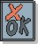

Artifacts >
Artifacts >
 Test Artifact Set >
Test Artifact Set >
 {More Test Artifacts} >
Test Definition >
Test Case
{More Test Artifacts} >
Test Definition >
Test Case
Artifacts >
Test Artifact Set >
{More Test Artifacts} >
Test Definition >
Test Case
Artifact:
| ||||||||||||||||||||||||||||||||||
 Test Case |
The definition (usually formal) of a specific set of test inputs, execution conditions, and expected results, identified for the purpose of making an evaluation of some particular aspect of a Target Test Item. |
| UML Representation: | There is no UML representation for this artifact. |
| Role: | Test Analyst |
| Optionality/ Occurrence: | One or more artifacts. Considered optional in some domains and test cultures, and mandatory in others. Where used, many Test Cases will exist. |
| Enclosed in: | Optionally the Test Case can be enclosed partially or completely within the Test-Ideas List or Test Script. |
| Templates: | |
| Examples: | |
| Reports: | |
| More Information: | |
| Input to Activities: | Output from Activities: |
The purpose of the Test Case is to formally identify and communicate the detailed specific conditions which will be validated to enable an evaluation of some particular aspects of the Target Test Items. Test Cases may be motivated by many things but will usually include a subset of both the Requirements (Use Cases, performance characteristics, etc.) and the risks the project is concerned with.
The Test Case is primarily used:
There are no UML representations for these properties.
|
Property Name |
Brief Description |
| Name | An unique name used to identify this Test Case. |
| Description | A short description of the contents of the Test Case, typically giving some high-level indication of complexity and scope. |
| Purpose | An explanation of what this Test Case represents and why it is important. |
| Dependent Test and Evaluation Items | Some form of traceability or dependency mapping to specific elements such as individual requirements that need to be referenced. |
The first candidate Test Cases may be identified as early as the Inception phase, and are subsequently identified on an iteration-by-iteration basis throughout the remainder of the project lifecycle. It is typical for Test Cases to be defined in detail as the implementation work is scheduled for them, usually beginning with the first iteration in the Elaboration phase.
The Test Analyst role is primarily responsible for this artifact. Those responsibilities include:
In certain domains and testing cultures, Test Cases are considered optional artifacts, whereas in others they are highly formalized and mandatory. As such, both the contents and format of Test Cases may require modification to meet the needs of each specific organization or project.
When they are recorded (both formally and informally), two main styles are followed:
Some consideration should also be given to ongoing measurement of the test cases for progress, effectiveness, and so forth. Consider requirements-based test coverage, in which each Test Case traces back to at least one test idea and at least one system requirement, which represents a subset of the Product requirements (see Concepts: Key Measures of Testing).
As mentioned, it is typical for multiple Test Case instances or variations to be specified in a single document, usually grouped by the general purpose or objective of the tests. This may be realized as multiple execution conditions described within the one document, one per unique Test Case instance.
|
Rational Unified
Process
|